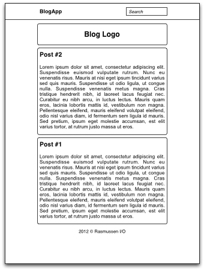
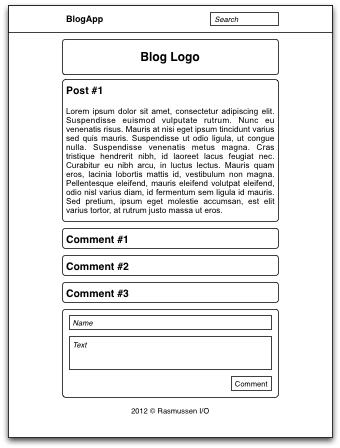
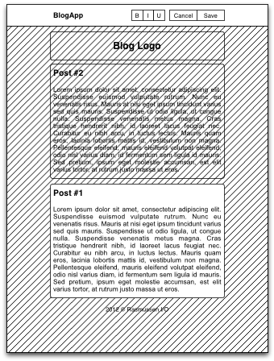

BlogApp blir utviklet av Christian Rasmussen (080599) som en del av faget Databaser og Web ved Høgskolen i Telemark.
BlogApp er en web-applikasjonen for blogging. Den inneholder funksjoner for å lese og skrive blogginnlegg, samt kommentere på disse. Jeg vil legge stor vekt på at web-applikasjonen blir interaktiv og brukervennlig.
Denne web-applikasjonen retter seg mot alle som ønsker å formidle noe, være seg dagens hendelser eller temaer man er opptatt av.

Hovedsiden viser en liste over blogginnlegg.

Et enkelt blogginnlegg med tilhørende kommentarer.

Et blogginnlegg som blir redigert.
Tabeller:
Web-applikasjonen skal bestå av to deler; en åpen del og en passordbeskyttet del.
Åpen del:
Passordbeskyttet del:
For at web-applikasjonen skal være så interaktiv som mulig vil jeg sørge for at alle handlinger skjer sømløst, altså uten at nettsiden trenger å lastes inn på nytt. I tillegg skal blogginnleggene kunne redigeres på stedet slik at administratoren ser hvordan innlegget vil se ut (WYSIWYG).
Andre funksjoner som er aktuelle i et bloggsystem, men som jeg i utgangspunktet ikke vil implementere: